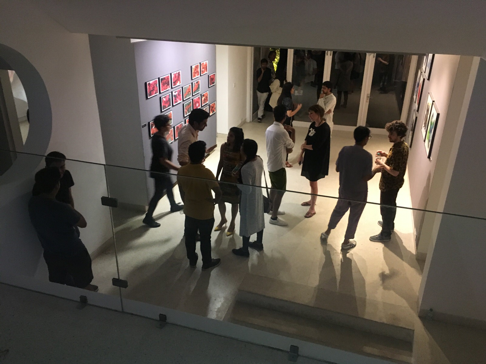
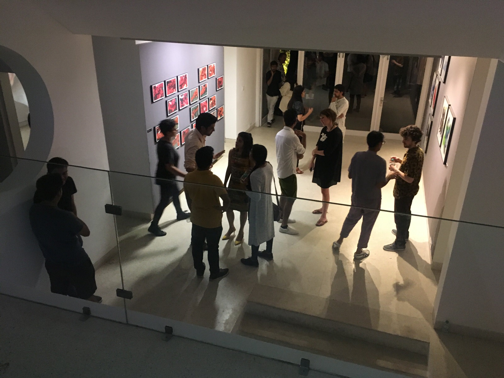

Gradient Descent, Nature Morte, Dehli

 



I had the pleasure of exhibiting in a group show at one of Indias foremost contemporary art galleries - Nature Morte in Dehli. The show featured works created entirely by Artificial Intelligence in collaboration with seven international artists: Harshit Agrawal, Memo Akten, Jake Elwes, Mario Klingemann, Anna Ridler, Nao Tokui, and Tom White.
‘Gradient Descent’ was curated by 64/1, an art curation and research collective focused on building public understanding of how artists and artificial intelligence can come together to create art for the post-human age. 64/1 was founded by Raghava KK and Karthik Kalyanaraman out of Bangalore, India.
I had an wonderful week meeting Indian politicians, officials, artists and academics. I spoke on a panel about my art process and collaborating with a machine at an INK talk (Indian equivalent of TED). It was such a pleasure to be invited out by Raghava and Karthik having discussions with them and the other artists about our inspirations and the future.
Press: Artnet, Financial Times, Vogue India, Forbes India, The Hindu, Fastcompany
Bloomberg New Contemporaries


Jake has been selected to show work at this years New Contempories. "New Contemporaries is the leading organisation supporting emergent art practice from UK art schools. Since 1949 New Contemporaries has consistently provided a critical platform for new and recent fine art graduates primarily by means of an annual, nationally touring exhibition.
Showcasing new and recent fine art graduates since 1949, the roster of alumni encompasses artists such as Frank Auerbach, Paula Rego, David Hockney, Damien Hirst, Tacita Dean, Mark Lecky, Ed Atkins, Marvin Gaye Chetwynd and Rachel Maclean have all been selected.
For the first time the national touring exhibition will launch at BALTIC Centre for Contemporary Art, Gateshead and BALTIC’s project space at BALTIC 39, Newcastle upon Tyne from 29 September to 26 November 2017. The exhibition will then travel to Block 336, London, from 27 January to 3 March 2018." - newcontempories.com
Ars Electronica Festival

 Image credits: Ars Electronica, Tom Mesic & Florian Voggeneder
Image credits: Ars Electronica, Tom Mesic & Florian Voggeneder
Ars Electronica's theme for 2017 in Artificial Intelligence, Elwes was invited to show four pieces as part of the festival, Latent Space, Closed Loop and Machine Learning Porn at this years Ars Electronica Fetival in Linz, Austria.
Jake is also going to give a talk and is showing Dadada Ta with the Artist Development Agency.
"Art, technology, society. Since 1979, Ars Electronica has sought out interlinkages and congruities, causes and effects. The ideas circulating here are innovative, radical, eccentric in the best sense of that term. They influence our everyday life—our lifestyle, our way of life, every single day.
Once a year, Ars Electronica invites artists, scientists and researchers from all over the world to a conclave in Linz to confront a specific, interdisciplinary theme in the context of speeches, workshops, exhibitions and symposia."